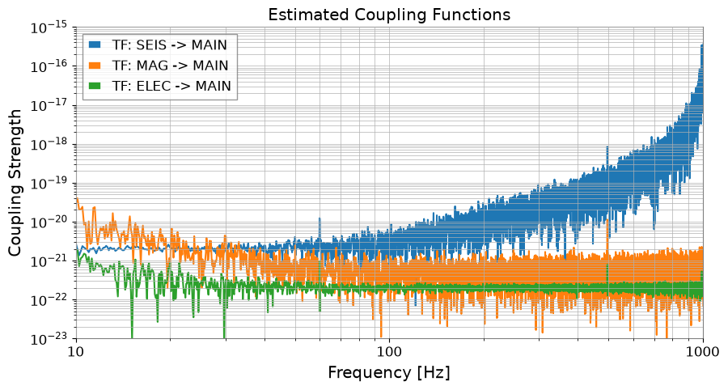
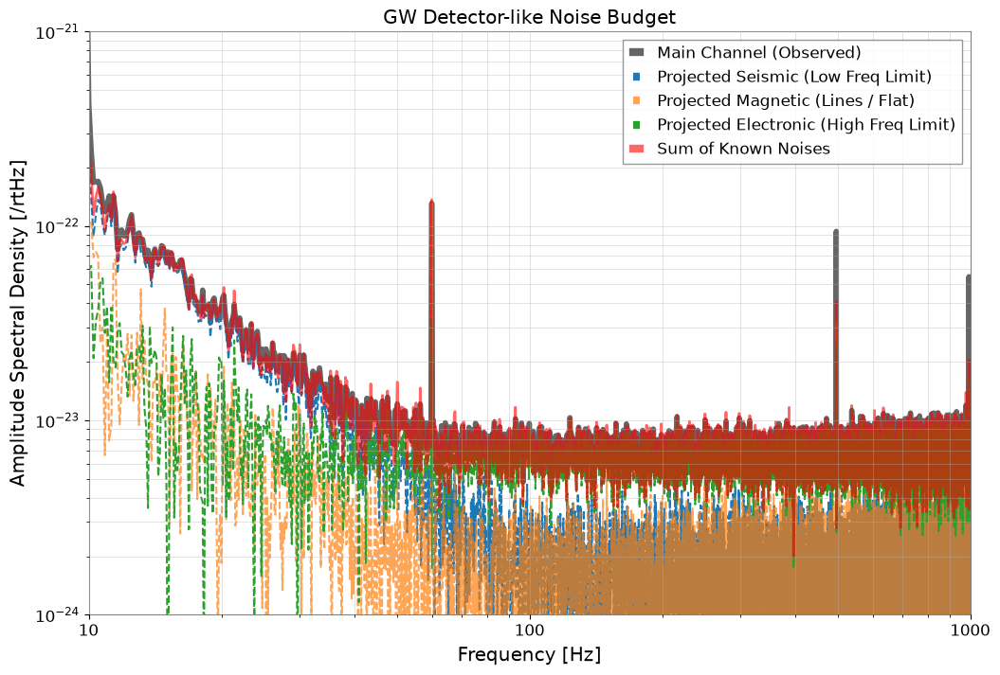

Note
This page was generated from a Jupyter Notebook. Download the notebook (.ipynb)
[1]:
# Skipped in CI: Colab/bootstrap dependency install cell.
Case navigation:
Back to the canonical gallery: Case Studies
Related reference surfaces: Reference Index, API: Frequency Series, Reference Topics
Neighboring featured workflows: Transfer Function Measurement, Active Damping
Noise Budgeting and Multi-Channel Correlation Analysis

In precision measurements (such as gravitational wave detectors), identifying the origin of noise contained in the main observation data is extremely important. This process is called Noise Budgeting.
The sensitivity curve of a gravitational wave detector is limited by ground vibrations at low frequencies, thermal noise at mid frequencies, and statistical noise (shot noise) at high frequencies, exhibiting a characteristic “U-shaped” profile.
In this tutorial, we will demonstrate the analysis with the following flow:
Multi-Channel Data Simulation: In addition to the main channel, we generate auxiliary channels for ground vibrations, magnetic field fluctuations, circuit noise, etc.
Coherence Mapping: Calculate the coherence between the main channel and each auxiliary channel to identify the primary noise sources.
Transfer Function Estimation: Estimate the “coupling strength (transfer function)” from the auxiliary channels to the main channel.
Noise Projection: Using the transfer function, convert (project) the noise from the auxiliary channels into the units of the main channel.
Noise Budget Visualization (Noise Budget Plot): Overlay all noise sources to reveal the breakdown of the observed “U-shaped” spectrum.
[2]:
import warnings
warnings.filterwarnings("ignore", category=UserWarning)
warnings.filterwarnings("ignore", category=DeprecationWarning)
import matplotlib.pyplot as plt
import numpy as np
from scipy import signal
from gwexpy import TimeSeries, TimeSeriesDict
from gwexpy.noise.asd import from_pygwinc
from gwexpy.noise.wave import from_asd
1. Multi-Channel Data Simulation (Creating a U-Shaped Spectrum)
We create a sensitivity curve that mimics a gravitational wave detector.
MAIN: The observation target. Has a “U-shaped” spectrum dominated by ground vibrations in the low-frequency region and actuator/circuit system noise in the high-frequency region.AUX_SEIS: Monitors low-frequency ground vibrations.AUX_MAG: Magnetic field monitor (including 60Hz power line).AUX_ELEC: High-frequency noise source (e.g., control system or readout circuit noise).
[3]:
fs = 2048.0
duration = 64.0
t = np.arange(0, duration, 1 / fs)
n_samples = len(t)
np.random.seed(42)
rng = np.random.default_rng(42)
# Use an aLIGO-like ASD as the baseline target so the synthetic main channel resembles a detector sensitivity curve.
fmax = fs / 2
asd_main = from_pygwinc(
"aLIGO", fmin=5.0, fmax=fmax, df=1.0 / duration, quantity="strain"
)
main_base = from_asd(asd_main, duration, fs, t0=0, rng=rng).highpass(5)
# --- Build auxiliary witness channels that stand in for candidate physical noise sources. ---
# 1. Ground motion dominates the low-frequency end, as seismic coupling often does in real detectors.
b_low, a_low = signal.butter(2, 2.0, fs=fs, btype="low")
seis_val = signal.lfilter(b_low, a_low, np.random.normal(0, 50.0, n_samples))
seis = TimeSeries(seis_val, sample_rate=fs, name="Seismic", unit="um")
# 2. Magnetic pickup contributes line features around mains harmonics plus a flatter broadband term.
mag_val = np.random.normal(0, 0.1, n_samples)
mag_val += 0.8 * np.sin(2 * np.pi * 60 * t) # 60Hz
mag = TimeSeries(mag_val, sample_rate=fs, name="Magnetic", unit="nT")
# 3. Electronic noise becomes important at high frequency where the mechanical channels stop dominating.
elec_val = np.random.normal(0, 1.0, n_samples)
elec = TimeSeries(elec_val, sample_rate=fs, name="Electronic", unit="V")
# --- Mix those witnesses into the main channel so the observed strain-like spectrum is a sum of several physical contributions. ---
main = (
main_base
+ seis * (2e-21 * main_base.unit / seis.unit)
+ mag * (1e-22 * main_base.unit / mag.unit)
+ elec * (2e-22 * main_base.unit / elec.unit)
)
# Keep the target and witness channels together so coherence and projection can be computed consistently.
tsd = TimeSeriesDict()
tsd["MAIN"] = main
tsd["AUX_SEIS"] = seis
tsd["AUX_MAG"] = mag
tsd["AUX_ELEC"] = elec
# Inspect the ASD first to confirm the synthetic main channel has the expected U-shaped detector-like profile.
asd_dict = tsd.asd(fftlength=8, overlap=4, method="welch")
plot = asd_dict.plot(xscale="log", yscale="log", subplots=True, sharex=True)
axes = plot.get_axes()
axes[0].plot(
main_base.asd(fftlength=8, overlap=4, method="welch"), alpha=0.5, color="black"
)
axes[0].set_xlim(10, 1000)
axes[0].set_ylim(1e-24, 1e-21)
axes[1].set_ylim(1e-6, 1e-1)
axes[2].set_ylim(1e-3, 1e1)
axes[3].set_ylim(1e-2, 1e0)
plt.show()
# The MAIN channel now falls at low frequency and rises again at high frequency, which is the qualitative signature of different noise families dominating in different bands.

2. Coherence Mapping
We check which sensors have high coherence with the left side, bottom, and right side of the “U-shape” of the main channel.
[4]:
aux_names = ["AUX_SEIS", "AUX_MAG", "AUX_ELEC"]
plt.figure(figsize=(10, 6))
for name in aux_names:
coh = tsd["MAIN"].coherence(tsd[name], fftlength=8)
plt.semilogx(coh.frequencies, coh.value, label=f"MAIN vs {name}")
plt.title("Coherence Mapping")
plt.xlabel("Frequency [Hz]")
plt.ylabel("Coherence")
plt.xlim(10, 1000)
plt.ylim(0, 1.1)
plt.legend()
plt.grid(True, which="both")
plt.show()
# Coherence shows which witness can explain the main channel in each band, but it still indicates shared structure rather than proof of causality.

3. Transfer Function Estimation
We estimate the coupling coefficients (transfer functions) in each frequency band.
[5]:
tf_seis = tsd["AUX_SEIS"].transfer_function(tsd["MAIN"], fftlength=8)
tf_mag = tsd["AUX_MAG"].transfer_function(tsd["MAIN"], fftlength=8)
tf_elec = tsd["AUX_ELEC"].transfer_function(tsd["MAIN"], fftlength=8)
plt.figure(figsize=(10, 5))
plt.loglog(tf_seis.abs(), label="TF: SEIS -> MAIN")
plt.loglog(tf_mag.abs(), label="TF: MAG -> MAIN")
plt.loglog(tf_elec.abs(), label="TF: ELEC -> MAIN")
plt.xlim(10, 1000)
plt.ylim(1e-23, 1e-15)
plt.title("Estimated Coupling Functions")
plt.xlabel("Frequency [Hz]")
plt.ylabel("Coupling Strength")
plt.legend()
plt.grid(True, which="both")
plt.show()

4. Noise Projection
[6]:
main_ch = tsd["MAIN"]
proj_seis = asd_dict["AUX_SEIS"] * tf_seis.abs()
proj_mag = asd_dict["AUX_MAG"] * tf_mag.abs()
proj_elec = asd_dict["AUX_ELEC"] * tf_elec.abs()
# Sum the projected components in quadrature because approximately independent noise families add in power, not linearly in amplitude.
total_proj = (proj_seis**2 + proj_mag**2 + proj_elec**2) ** 0.5
# Plot the combined projection to compare the explained budget against the observed main spectrum.
plt.figure(figsize=(10, 5))
plt.loglog(total_proj, label="Total Projected Noise")
plt.legend()
plt.show()

5. Noise Budget Visualization (Noise Budget Plot)
We display how the “U-shaped” noise of the main channel is explained and decomposed.
[7]:
plt.figure(figsize=(12, 8))
# Plot the observed main ASD as the reference sensitivity curve we are trying to explain.
plt.loglog(
asd_dict["MAIN"],
label="Main Channel (Observed)",
color="black",
linewidth=4,
alpha=0.6,
)
# Overlay each projected witness contribution to see which physical source dominates each band.
plt.loglog(proj_seis, label="Projected Seismic (Low Freq Limit)", ls="--")
plt.loglog(proj_mag, label="Projected Magnetic (Lines / Flat)", ls="--", alpha=0.7)
plt.loglog(proj_elec, label="Projected Electronic (High Freq Limit)", ls="--")
# The total projection is the hypothesis for the explained portion of the measured sensitivity.
plt.loglog(total_proj, label="Sum of Known Noises", color="red", linewidth=2, alpha=0.6)
plt.title("GW Detector-like Noise Budget")
plt.xlabel("Frequency [Hz]")
plt.ylabel(f"Amplitude Spectral Density [{main_ch.unit}/rtHz]")
plt.xlim(10, 1000)
plt.ylim(1e-24, 1e-21)
plt.legend(frameon=True, facecolor="white", loc="upper right")
plt.grid(True, which="both", ls="-", alpha=0.5)
plt.show()
# When the summed projection follows the measured curve, the budget supports the story that different noise mechanisms dominate different frequency ranges.
